propeller maintenance
2023.05.06
Westport Boatyard
North Saanich, BC, Canada
We hauled Pino out of the water with plans to replace the cutless bearing, and to replace the bellow on our PSS shaft seal. To get the cutless bearing off, removing the propeller from the shaft is necessary. It is also a good idea to remove the shaft entirely, but more on that later...
When we bought Pino, it came with a PYI Max Prop 2(classic).
"Max-Props are feathering propellers, so unlike folding propellers, Max-Props do not rely on centrifugal force to open. Instead, the Max-Prop relies on the torque from the shaft rotation acting on the differential type gear design in the body of the propeller."
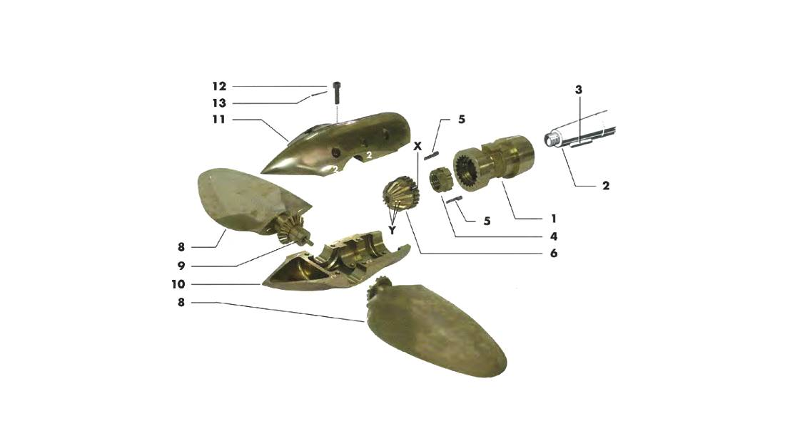These propellers are designed to be low-drag, and to do great in reverse. When we looked up the model, we learned it was worth 1,600 USD(gulp).
A prop like this is more complex than a one piece design, but if maintained it will work well for a long, long time. The prop has to be greased every year or so. We've cheated in the past, and left more time pass between greasings, but it did no harm that we could see.
How to grease a max-prop 2: The prop has two hex bolts, which can be unscrewed and that can house a 'grease nipple'. A grease gun hooks onto the nipple, and pumps grease straight into the Max Prop's inner cavity, dousing all of the gears inside. PYI recommends using a calcium sulfonate(No. 130-AA) grease, because it doesn't wash away as quickly as other alternatives (so they say...). We've put other types of grease in there, and it did no damage (note that being a sailboat, we don't use our engine too often). Our boatyard neighbor had some left over grease from his Max Prop, and let us use it.
Note: it's possible to grease the propeller while in the water, but don't lose the grease nipple or the screws for the grease slot.
The propeller has 6 screws on one side of the body, heldfast by small monel cotter pins. We cut the pins, and proceeded to taking the unit apart. The grease inside had a yukey greeny browney pukey color, but all of the inside components seemed to have faired fine.
When taking a Max Prop apart, clean the grease away from the gears to try and read the letters on both the fins, and the central gear. We didn't take note of ours, because we didn't know the numbers were there(covered in grease).
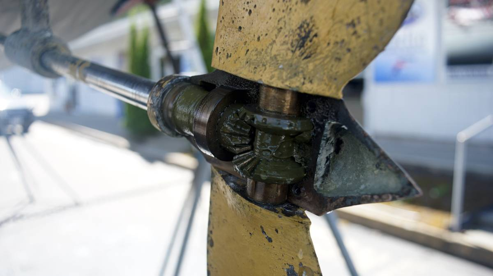Note: the yellow covering the propeller in the above photo is prop speed. We put it on while in Japan, because the yard there allowed us to pay for the amount we needed rather than for the entire can (prop speed is not cheap). We used a brass wire brush attachment for a drill to remove it. In all, we thought the flatter brush model worked better for this. Using harder metal brushes can damage bronze.
Each Max Prop can be adjusted to a specific pitch, matching the reduction gear ratio of the engine powering it. The central gear has two symbols etched into its grooves, a symbol with one circle, and another with two. Both have to be lined up with letters etched onto the edge of the gears at the end of each blade. A Max prop that is set wrong will not perform well.
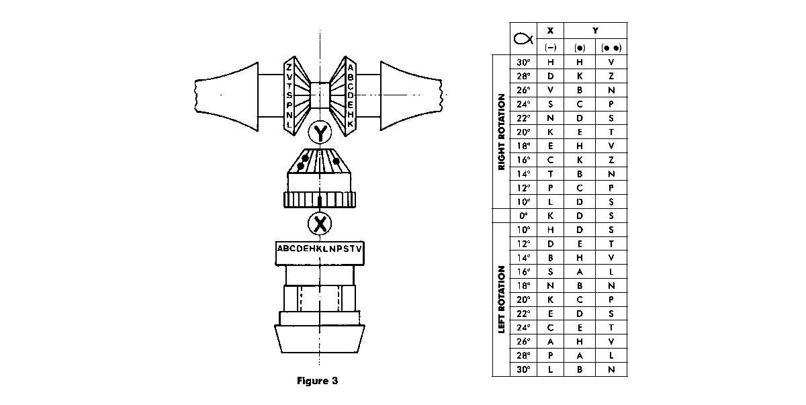When we did our engine swap in 2020 (see engine rebuild), we changed from a Yanmar2GM(13hp) to a used Yanmar2GM20F(16hp), but since the change was done while in the water we didn't get to adjust the pitch(we also didn't know that there was a thing as pitch adjustment on a propeller).
To determine the pitch, it is necessary to measure the propeller from blade end to blade end. Ours was 38 cm(15 inches) across. This measurement, plus the engine reduction ratio, helps determine the correct pitch to set on the Max Prop.
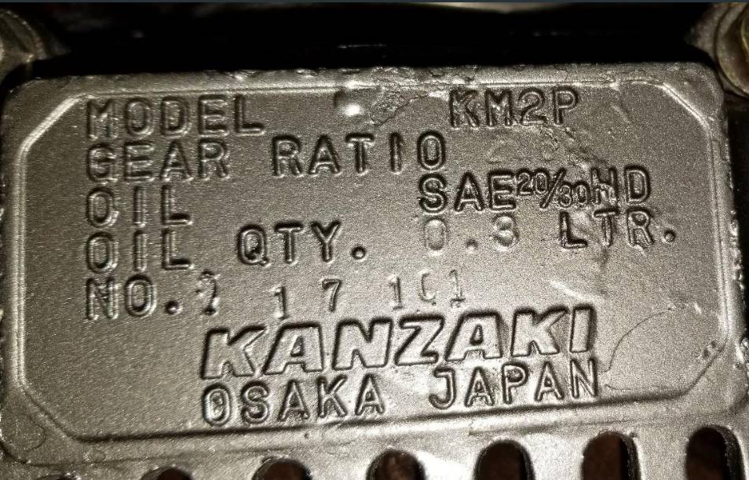The gear reduction ratio is often stamped on the back of the engine. We went to look for ours, but the number was a bit worn and difficult to read. We could only make out a 2, and a 6. Seems like they laid the paint on a bit too thick. The manual listed 3 different ratios for our model engine, but based on the numbers we could make out, the correct one had to be 2.62/3.06 (rpm is 3400, with a maximum of 3600). We weren't sure how to determine the blade angle, even with all of that information, so we gave PYI a ring, and they helped us out.
The desired blade angle for Pino's propeller is 22 degrees, with the following settings:
X -> N
Y -> D
Y -> S
We removed the two spinner halves, then the blades, the central gear, and all of the associated bits, until the hub was the only thing left on the shaft. Removing the hub requires the use of a puller. We don't own one, but luckily, Peter Jensen(Funfish Marine in the Westport Boatyard) rents them out. We used the puller, along with a few hits with a mallet, and the hub came right off.
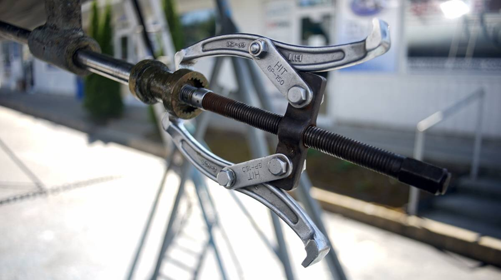By then, the PSS shaft seal was already de-coupled (easy enough), but the shaft coupling needed a lot of convincing. The transmission output flange (engine side) and shaft coupling are bound together by a flexible coupling. When we asked our friend Rick tips on removing the shaft coupling, he suggested un-doing the bolts, parting the two halves enough to fit a spacer (matching the diameter of the shaft), and to screw the bolts back on, with the spacer gradualler pushing the shaft out. This technique doesn't quite work with a flexible coupling, because the bolts binding those two bits together are not long enough.
Note on flexible couplings: A flexible coupling is actually kind of useful, it is designed to protect a boat's drivetrain, to reduce vibration, compensate for some misalignment, to isolate the shaft, and absorb shock loads.
Because the engine was put it in 2021, the bolts of our coupling had been undone fairly recently, and weren't too difficult to pry off (we used an appropriately sized socket wrench, and force). The coupling will spin as you try to undo a bolt, using another wrench to hold it in place is recommended. To remove our set screw (little screw on the side of the coupling), it is necessary to undo a bolt first. Once the bolt is removed, it is now possible to undo the set screw. Our friend recommended removing the set screw on the coupling, and squirting some PB B'laster into the hole the night before to make it easier to remove.
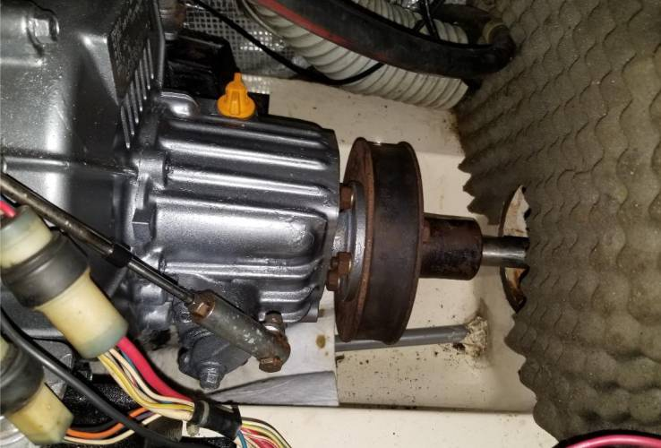The hard part, was getting the coupling to release its hold on the shaft, as we said, it is not possible to use the same technique as our friend suggested. Devine used the shaft seal SS rotor (careful not to damage it) to make a lever to apply pressure, while they forced a ratchet nut inside from the other side with the spacer method. With a lot of effort, the coupling eventually agreed to let go. We promised it that it would be reunited with the shaft soon enough.
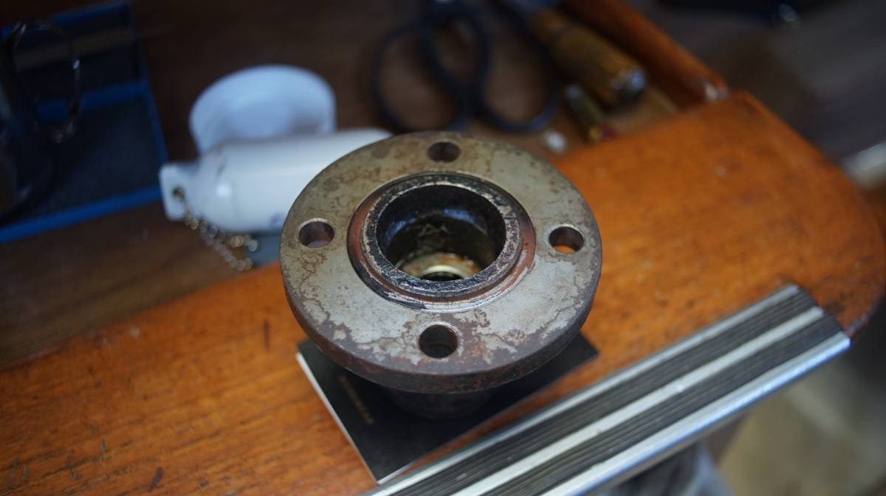The next step was to try and pull the shaft out. Unfortunately, we realized that Yamaha 33 sailboats (with engine near the stern) are designed in a way that the shaft cannot exit from the stern. The end of the shaft is lined with the skeg, and we can't exactly remove that, can we? We learned that the only way to remove it, was to either make a giant hole in the skeg, or to pull it from inside the boat which requires lifting the engine from its mounts. A horrifying thought.
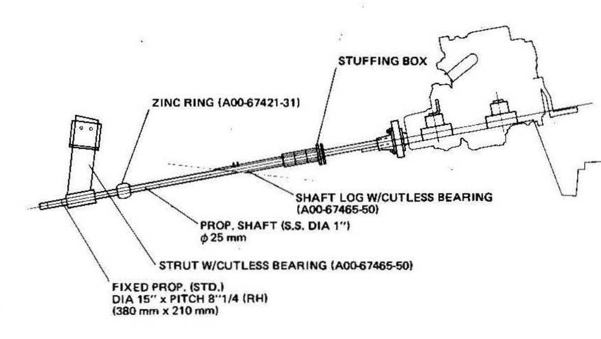Some boats can drop their rudder to remove it, or the shaft is misaligned with the rudder so it can be pulled, but not ours! We learned it was a very common, and frustrating design. I wish I knew why they did that. Our cutless bearing was old, but maybe not worth tearing the engine out while on the hard to replace it. To make matters worse, we had no time to build a tool to remove the bearing while on the shaft. We assumed we'd be able to take the shaft out (never assume anything, make backups to your backups kids). Next time, we'll gather all of the necessary bits prior to hauling out, and do it ourselves (see a good tutorial to make a cutless bearing extractor).
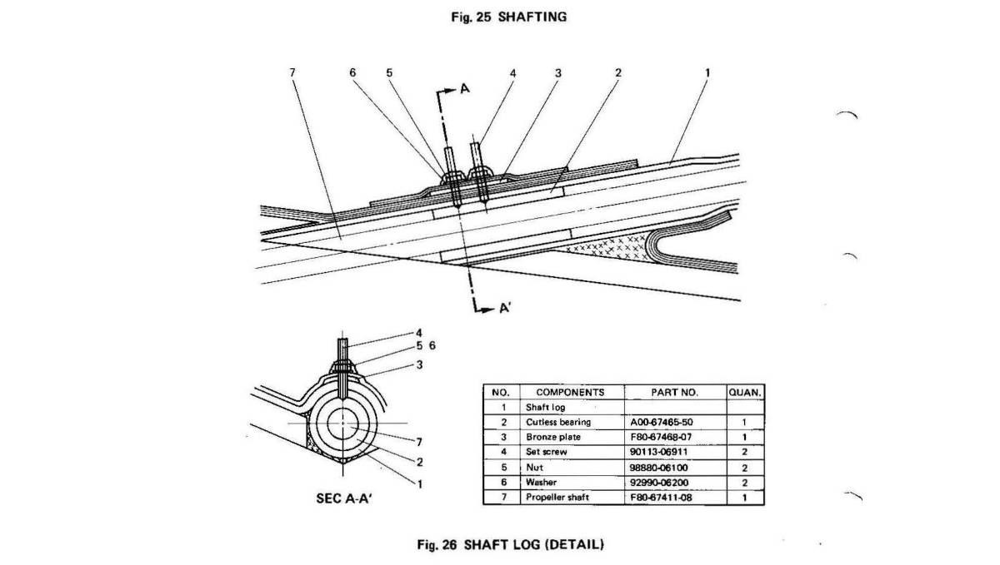This year the Westport Boatyard was incredibly short staffed, this paired with zero tides (not a ton of water at the lift) makes it near impossible to delay haul-in dates, say you need extra time. Our friend Josh asked for more time, and was told they could only haul him back in 11 days later. This detail forced our hand, we had to do all of the work in 4 days (the time we had scheduled), or risk staying for an extra 11 days, earning us a very high bill(2000$+).
Our yard neighbor had not booked a haul-in date, he told us he never has in the past, he tells them when he is ready and they put him back in the next day, but he told us this year was different and that he had been stuck on the hard for days... wasting time, waiting for them to find a slot to put his boat back in the water. For now, it looks we'll have to live with the old cutless bearing. Luckily, it doesn't appear like there is that much play in it.
So we removed the prop for nothing, but at least it gave us an opportunity to take it apart and to learn how it works. Putting it back together was tricky, because we saw the end of our shaft had been cut rough. We had to screw the locking nut in and out to fix it. Getting the hub back on was also tricky. We used a length of 80 grit sand paper and sanded the end of the shaft (staying away from the threaded end) to try and smooth it out. When inserting the hub back, make sure the shaft and the inside of the hub are clean, and add some grease to help it along.
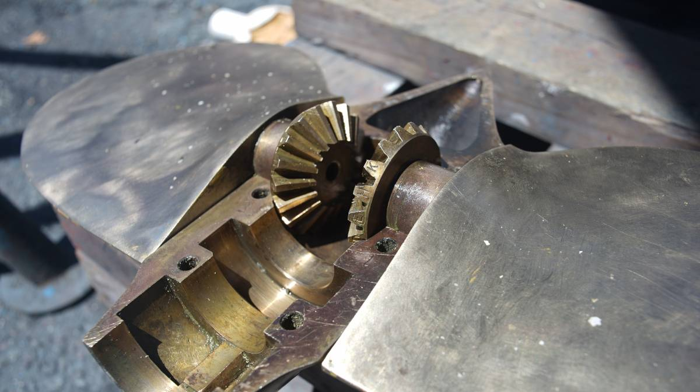Then, it is necessary to align the blades to the correct letters to get the right pitch. Pay attention to how the blades are facing (the Max Prop 2 manual will also warn you of this). Our yard neighbor put his on wrong the first time, with the blades facing backward (oops).
Then, we secured the two spinner halves on with screws, and added new cotters pins. The chandlery did not carry monel, and so we used SS. SS isn't as strong, or as corrosion resistant as monel, but we'll keep an eye on it. We had to cut the cotter pins shorter to fit the screws (again, the manual will tell you the right length).
We didn't re-apply prop speed, but we did cover the prop with a light coat of zinc cream. The cream only lasts about a year (we put it on our strut in 2021, seems like it worked okay), but it's fine. Our neighbor covered his with a zinc-based spray, and he offered it to us, but the spray can damage antifouling paint, and we didn't want to risk it (we had nothing to make a shield with, and by then, we were dead tired, tired of existing, ready to de-evolve back into amoebas. Life was easy back then, wasn't it?).
Dripless PSS Shaft Seal
Once the propeller was back on, we re-installed the PSS shaft seal(type A) from the inside (what a pain). These things are never installed in places that are easy to access. We both had bruises on our arms from this project.
A PSS shaft seal consists of many parts, starting from the stern tube, first comes the bellow, two hose clamps secure one end of the bellow to the stern tube, then another 2 set of hose clamps secure the forward end of the bellow to the carbon stator, then comes the SS rotor(locked to the shaft with 4 set screws, with 2 o'rings inside). The carbon stator is equipped with a hose barb, and the hose leads to a point above the waterline so that air doesn't stay trapped into the bellow.
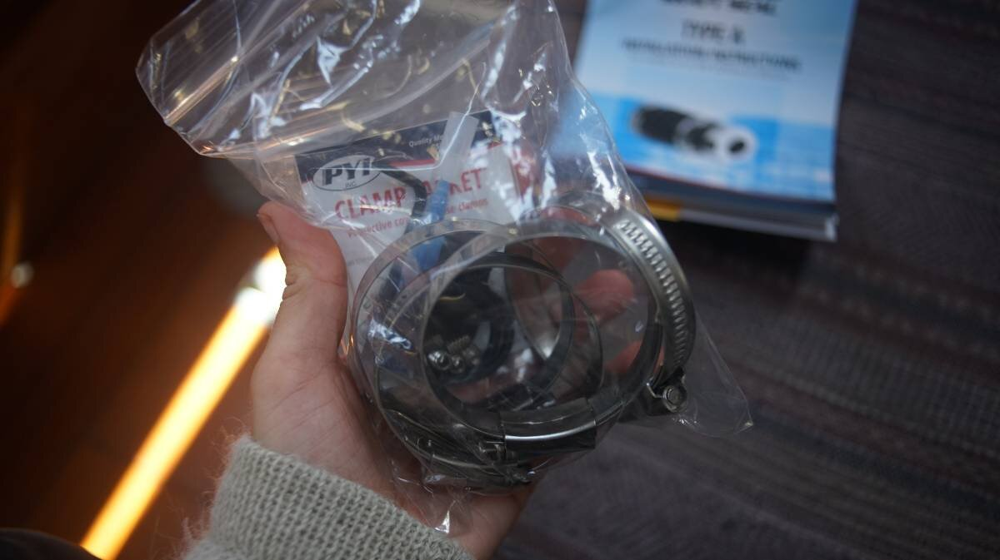We bought a service kit for our shaft seal, sized to our shaft (25 mm). The kit comes with:
- 5 set screws
- 2 o-rings(for the inside of the SS rotor)
- 1 allen key (for the set screws)
- a bellow
- 4 hose clamps(plus little rubber hose clamp protectors)
- a small tube of thread lock
It is necessary to remove the set screws from the SS rotor, and to slide it off the shaft to replace the two o-rings.
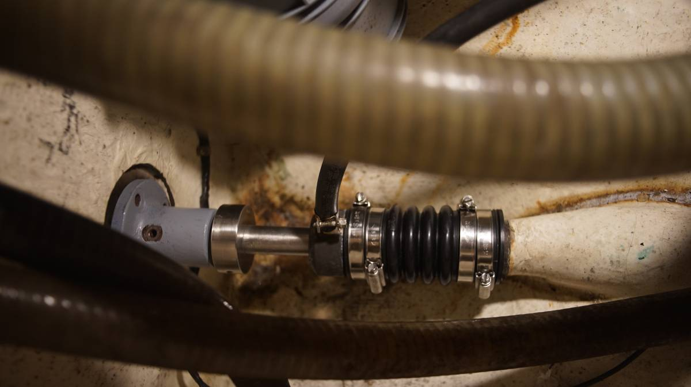Note: in the above photo, the bellow is not yet compressed. The SS rotor is not yet laying against the carbon stator. The re-painted coupling is visible on the end.
It takes a lot of force to compress the bellow enough to create the gap recommended by the installation guide (for a 25mm shaft, the recommended compression was 2 cm). The idea is to install all of the bits, just laying on each other and to mark the shaft, and then to compress the SS rotor and bellow 2 cm further than that line.
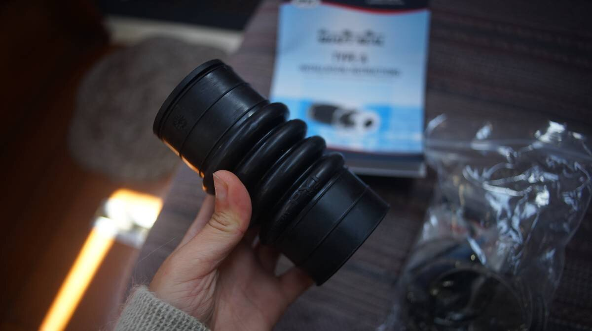While doing this, we didn't have enough hands. One hand has to compress the carbon stator and bellow, another has to grip the SS rotor (which doesn't slide as easily since it is very tight on the shaft) to get it to the 2 cm line. When that compression is reached, another set of hands are required to insert the new set screws. How many hands is that? Too many for that cramped, awful space. We were both squeezed into parts of the boat we'd never previously been squeezed in, with various boat bits poking into our ribs and arms and chest.
In the end, we secured a hose clamp on the line we'd drawn on the shaft (shaft seal at rest, w/o compression), then made a shim that was 2cm, squeezed all of the bits by hand, added the shim, which then gave us time to secure the 2 thread lock-laden set screws in the SS rotor.
Note: set screws are one time use only, do not re-use them. The edges get dull, and won't hold the rotor onto the shaft. If you messed up the install, don't re-use the same ones. The service kit gives an extra set screw (just in case), it's possible to order screws directly from PYI. Remember to add the other two set screws (with thread lock) over top of the two securing the rotor to the shaft, to keep them from trying to back out.
The previous owner of our boat had put a hose clamp just in front of the secured SS rotor, as a safety, and so we did the same thing (some people put clamp collars).
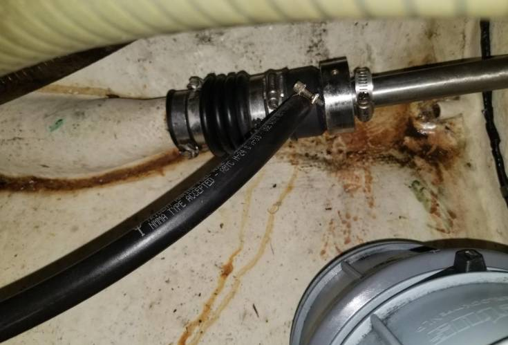Note: the above photo is of a compressed bellow, with all of the bits secured.
When Pino splashed back in the water, the seal appeared to not leak, as was designed (YAY). A pss shaft seal ought to have its bellow replaced every 6-7 years... but we may revisit this again when we actually replace the cutless bearing. It'll then be necessary to buy some extra set screws for the SS rotor (since they are single use) and that it'll be necessary to remove them to pull the shaft. The nightmare isn't over, just... delayed.